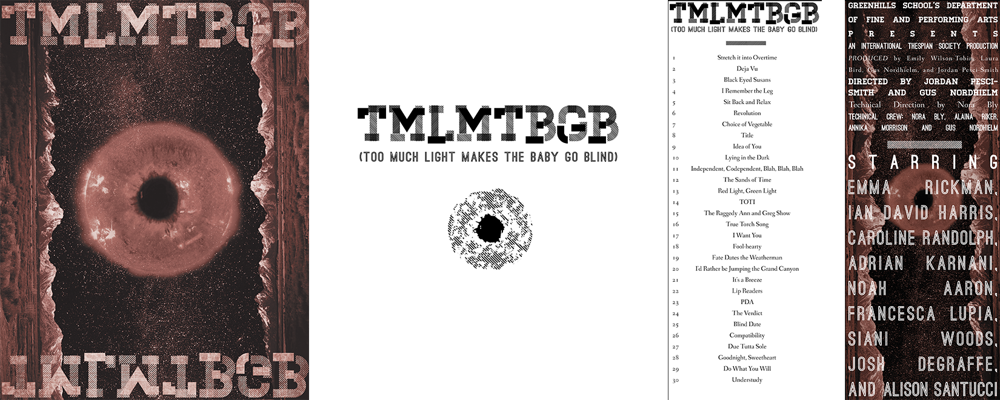
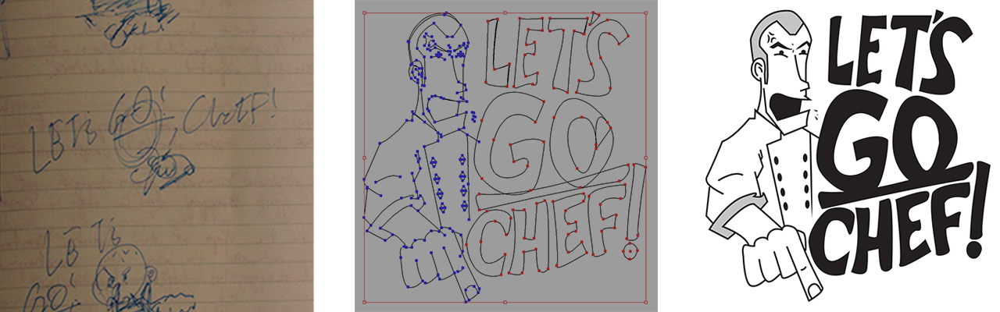
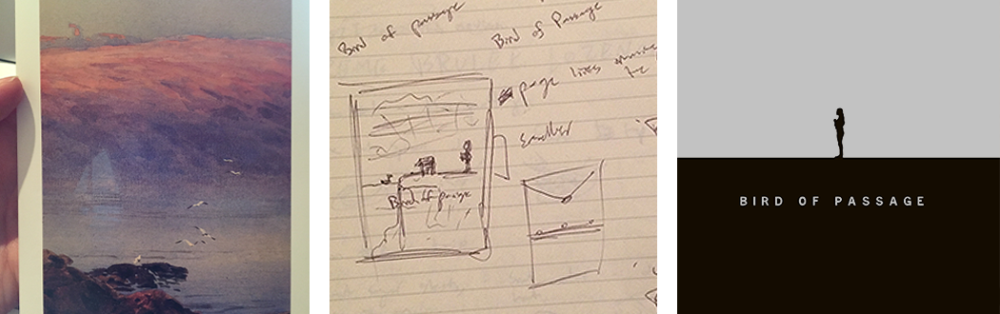

I’ve rounded up some of my more recent work, and laid it out on this rack for you. The work is placed in no particular order, so please parse through it however you like. Excepting, of course, this intro, which convention probably indicates comes first.
There are files of many formats representing projects with diverse goals, contexts, and challenges. Each section includes a brief description. My hope is to impart a sense of my taste as an artist and to demonstrate the skills I have to bring to the table. So to speak.
Cheers,
Gus
© LESS Graphic, 2015
So this video is pretty dumb. It is, in fact, the culmination of a series of dumb faux cooking show videos I made with my friend, Janie. We two decided this would be a sensible way to end them and deliver an invitation to our graduation party, given our plans to throw it together. A few days before the paper invites went out, she and the other two hosts arrived at my house. Wth only an hour to get things shot, and no plan, I got 45 minutes of footage - and they were off.
The trick I discovered sitting behind my computer was the “reality show transition”. It’s simple, and kind of a cheap trick - you let the music tell the audience where we are in the story and what to feel. I chose to use actual reality TV music, and thus make our faux cooking show into a faux reality show. Most of my editing was dictated by a bout of dialogue ending, or some dialogue being spoken, rather than the rhythms of the images, and so it becomes about dispensing information. Joke, joke, that’s who this is, this person is angry, it’s resolved, oh this was an invitation the whole time. There’s nothing resembling high art happening here, but for something so casual, I was excited and surprised to find this method of staging it. It actually maintains some forward motion, which is not implicit in the footage shot.
I do, of course, owe a lot to the three performers in this video, because they’re a delight to watch.
These posters served as advertisements for the three major theatre events that happened at my high school. I made a decision not to make three posters that got along in color space, which is very apparent when all three are lined up together. But imagine seeing them over a year, separated by several months. You’d either stare at it in class or catch it walking by. There were a lot of “knowns” that I wanted to capitalize on. The first poster set up the simplest version of a visual style I wanted to work with: the distinct frame (text and illustrations) and the background (bright blue). This was the Middle School show, and it was a lot brighter and cheerier than the others, so this seemed appropriate. It actually kind of hurts my eyes to look at in digital form.
From there I had darker and richer material to represent, so I extruded the posters into Z-space, so to speak. The mountains spread into the background, the trees and fog fade back to obscure it. Where the bright colors in the first poster should capture the attention of the viewer, the second two are meant to “draw” them in. In order to manage the increasing complexity of the backgrounds I made the decision to work only in one hue. That way the “framing” element houses all of the practical information in each poster (titles, authors, show dates) and the background elements house all of the atmospheric information, without either part clashing.
The process of making each poster was Illustrator-heavy. I began by laying down typography and blocking out colors - some posters had title/author font ratio restrictions. My goal was to keep an eye for visual diversity and growth through the whole process, beginning with this outlining stage.
Too Much Light Makes the Baby Go Blind is a pretty out-there piece of applied theatre that came out of Chicago. The show plays in many small segments, each anywhere from three minutes to ten seconds, and the order the segments play in is determined by the audience. Prompted by a line of signs pinned to a length of sting - numbered one through thirty - the audience just yells out numbers until one is chosen.
I was able to round up a group of people, access to a theater space, and stage a production of this show in high school. We had 24 hours to do the whole thing, so I racked my mind any and every task I could knock out beforehand. Of course, graphics are one such task, and this show demanded quite a few. There were of course posters (scrollable and to the left), as well as the signs and programs with their corresponding titles. The titles printed on the programs combined with the numbers posted onstage should pique the interest of the audience enough to get them yelling. The posters and advertisements should do the same thing visually - so I chose to print them with no date/time information. It was an exercise in interest-piquing.
The central poster graphic is a Photoshop manipulation of several images. It’s meant to be ambiguous. I’ve gotten “donut” a lot, though. It is, in fact, an iris superimposed on the sun, a reference to the title of the play.
A year or so ago, I realized I had all of the requisite technical skills to take on an animation project like this. This was particularly exciting to me given my interest in screenwriting: now I can just make movies on my computer! In my eagerness to give it a try, I decided to appropriate a school project. This meant making a film in Chinese, and incorporating some unit-relevant vocabulary.
This is a very insular process, in which the footage you're generating is always challenging the script. I suppose in conventional filmmaking, that burden is on the actor and any number of other collaborators. But as actor, costumer, director, and holy ghost, I had a diverse array of tasks, each requiring a specific mindset. Matching mouth shapes to audio is nothing like creating performances out of keyframes and vector images, for example. Often, the animation presented me with better options than I had written or storyboarded, which meant making a substantial changes very deep into the process. The best decisions I made came from being sensitive to the way the final images were expressing the story, and at the same time being brash enough to scrap my shot list.
I was lucky to have translation help from my classmates. One of them also provided a vocal performance, and she does a fantastic job.
The challenge here was to create something that was funny and not grotesque or encouraging of discomfort. The gift was for a fellow food runner, who just happened to enjoy throwing barbecues on his days off. I liked the marriage of that very calm setting and our workplace, where the executive chef could often be heard yelling “let’s go, chef” (generally at food runners and chefs de partie who were not “going,” chef).
I built the illustration and text together on paper first, and then drew them out in Adobe Illustrator. Having struggled in the past with creating vector illustrations, I found the vision I had in my head and my notes extremely helpful. It was important that the artwork be kind of friendly, as the success of the idea rested on tone: not disrespectful, not verisimilitudinous. I’m happy with the resulting illustration, and while I won’t be drawing with points and curves for fun going forward, I’m comfortable executing more elaborate vector illustrations, like this one.
In this case I can’t take credit for the entirety of the finished product, as the apron was printed by a vendor.

Both of these videos are responses to simple photography prompts. The above began with a mandate to make use of overlay photography. I drew from the common occurrence of trying to read a book late at night, when my eyes refuse to let me. The technique I set down was very simple, and didn’t require any special shooting. In each shot, I simply made a decision before I recorded about how intense the effect would be over the course of the clip.
Given the simplicity of the narrative, my goals were totally atmospheric and aesthetic. I tried to imagine images that would be enhanced with the effect: the journey down a flight of stairs, words drifting on a page, glassware overlaid with glassware. Aside from those shots which were very vivid in my head, though, building the short in Premiere was actually quite difficult. There are no constraints - when does the shot need to end? How do they all connect? The choice I finally made was to be arhythmic. I intended to lull the viewer, begin a transition abruptly, then lull them again - the two “characters” I invented were sleep and lucidity. Although this required extensive tweaking and review, it was a freeing to simply "feel" my way through the editing process.
One of the first things that drew me to filmmaking and ignited my interest in learning the requisite software were the homemade VFX shorts that populated YouTube when it was still relatively new. My tastes have matured somewhat, but I can’t deny the fun implicit in duplicating people and making things explode in After Effects. The prompt for this one was: a self-portrait. I formulated my basic story pretty quickly and went to work shooting through the rough ideas I had in my head. An added challenge came with my having a one-man cast and crew - which is probably appropriate given the prompt. The very first shot of the film was taken from a camera attached to a tripod suspended by my legs just below the frame.
The performances I give are a little cringe-worthy, maybe especially from my perspective, but I’m proud of the overall conceit and execution. A lot of my decisions were made right before I shot my footage, so I moved through the day very fluidly, and when it came time to make sense of all the green screen layers, I sort of knew how to proceed. My entry into the tacky amateur VFX world was intended to be a little more substantial and story-oriented.
The Pennyseats is a small theatre company local to Ann Arbor. Every winter, they kick off their fundraising campaign with a short video detailing their plans for the coming season. This fifth season represented a notable growth in the Pennyseats’ financial and creative aspirations, and I volunteered to make a video with that in mind. I sat down and watched their old videos in order to set some basic tonal constraints. Each of them plays over the Pennyseats “theme song”, so that was the backbone to my version as well. Given the amount of information I had to dispense I decided to make the “slide” the basic unit of the video: it moves from tableaux to tableaux, dispensing information in composed pictures and writing. In most slide shows, you cut from image to image, but I wanted to up the ante by removing those cuts. I’m a regular Iñárritu.
My senses of rhythm and visual consistency were put to the test here. Each illustration had to exist in the same world as the others, and each animation had to seem appropriate for the illustration. The text information had to be intelligible and clear, but move with the pictures around it. As much fun as it was to come up with different transitions from slide to slide, I realized that the logic of the script and storyboard dictated the success of the final project. When the pictures and words on the screen seem linked and rhythmically consistent to the viewer, the stress of keeping up disappears.

This is without a doubt the simplest poster I’ve designed. The image supporting the design actually came from a postcard, and it was one of the first materials I received after taking on the task of making this poster. “Bird of Passage” opened this summer in Ann Arbor in a very small theater called The Carriage House. This was the show’s “world premiere”, if you will.
I felt a special responsibility to represent the show in an attractive and accurate way. I began with elaborate graphical representations of plot elements, really trying to hammer in evocations of regret and death and rebirth. It felt strained, which is not what the show, as I read it, felt like. I took a step back, cut away ancillary elements, and I was left with the figure of the main character on a flat black surface, facing against the flow of the text (left-right, I doubt this works in Japan).
Of course at this point, the poster wouldn’t function very well as an advertisement, so I turned back to that initial image. I played around with the effect of black overlaid on the painting until I found something elegant and serene. I did flip the postcard horizontally to fit with the “horizontal meaning” of the final poster.
Even from a very basic set of ideas (up vs. down, left vs. right) I'm happy with the atmosphere and inferences the poster allows.
